One of the strongest, clearest 70s D-35's I have played. A beautiful flatpicking guitar it also has great articulation under the fingers. A neck reset and refret have been done along with new bone nut and saddle and Waverly bridge pins. Has some filled and repaired binding on the fretboard from a prior split in the plastic. Comes in the original hard shell case.
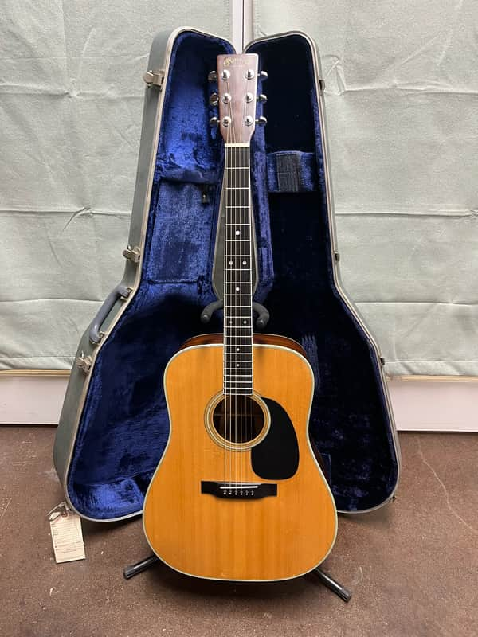
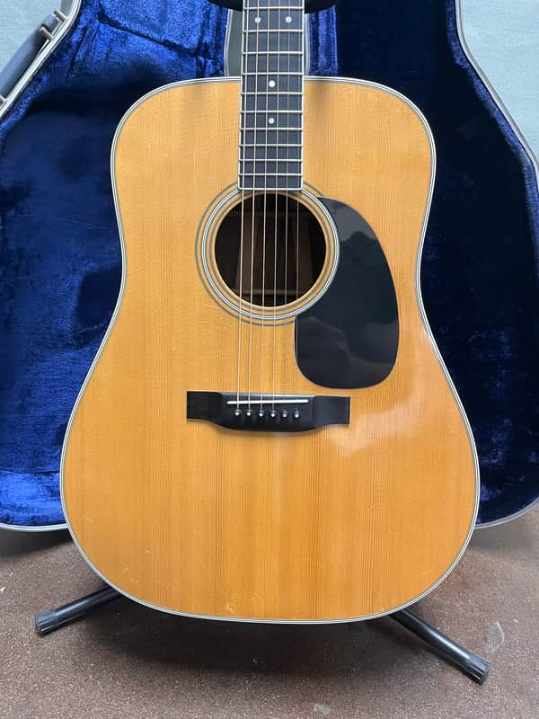
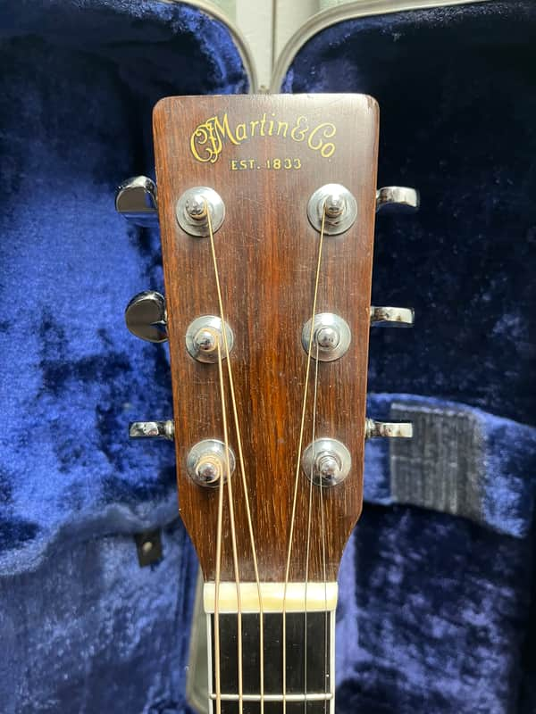
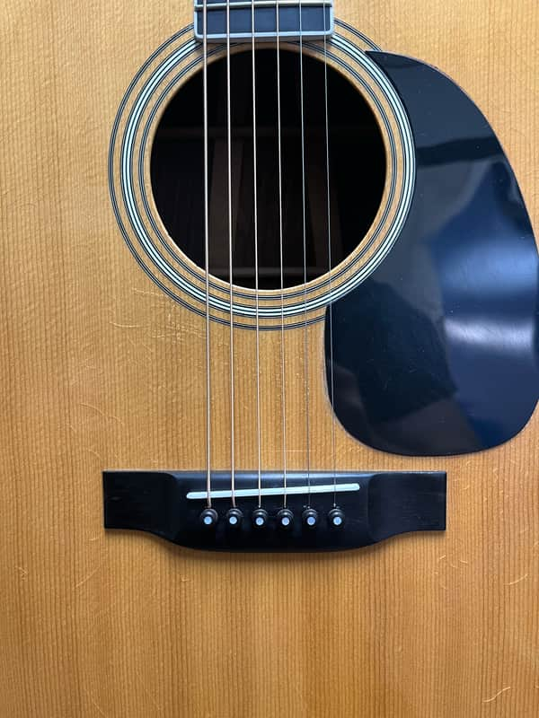
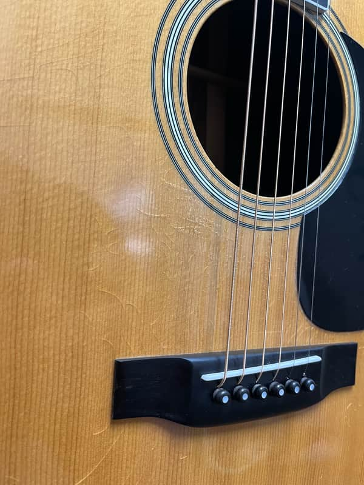
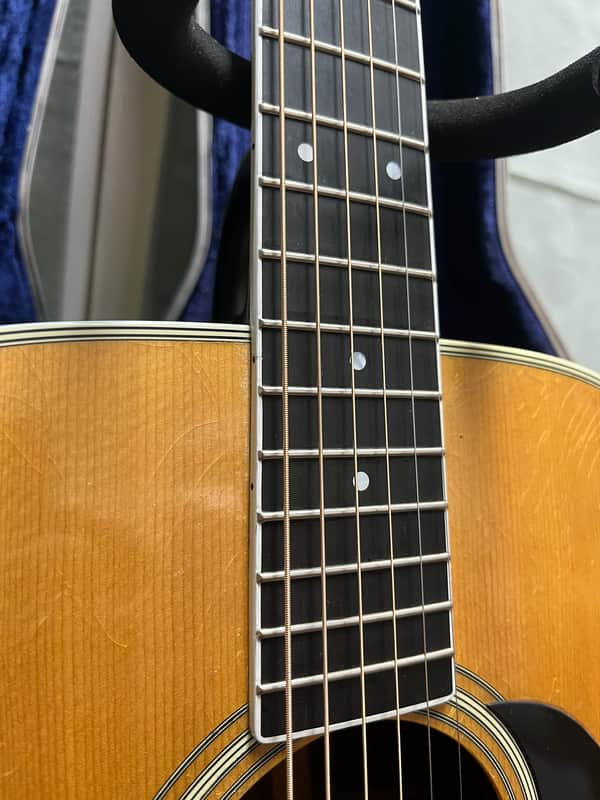
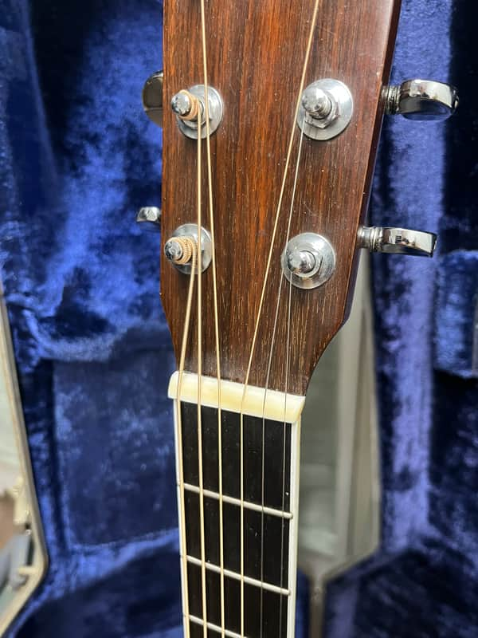
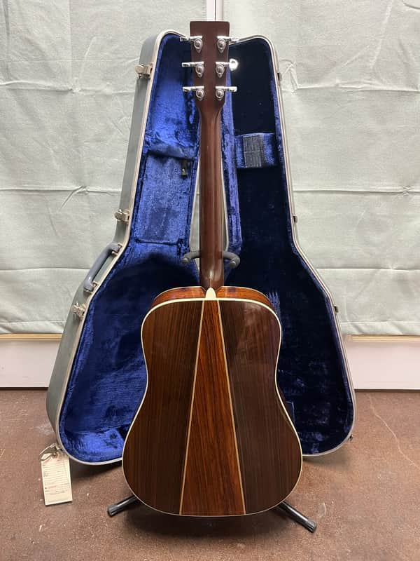
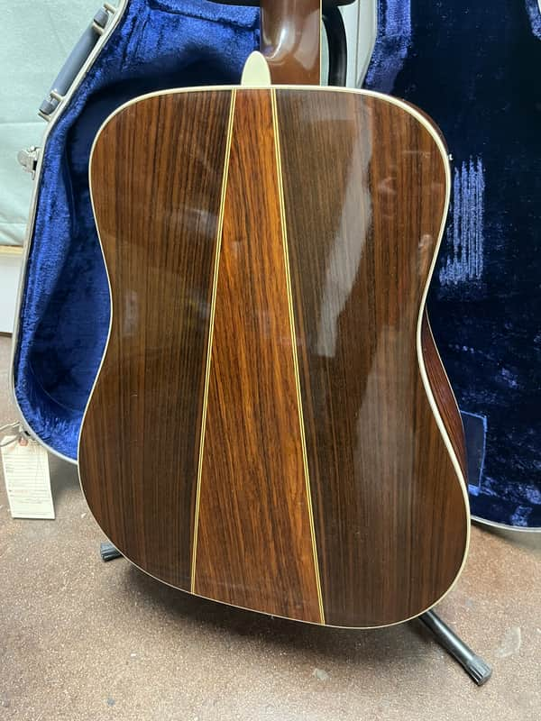
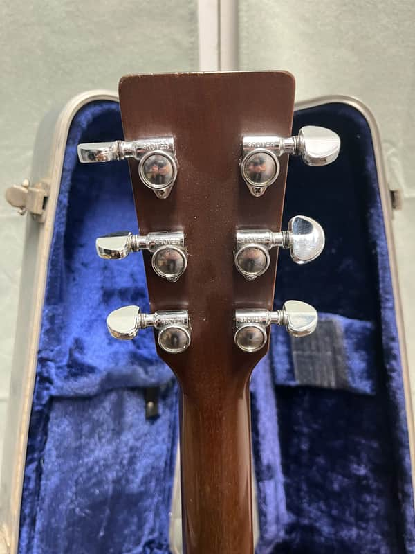
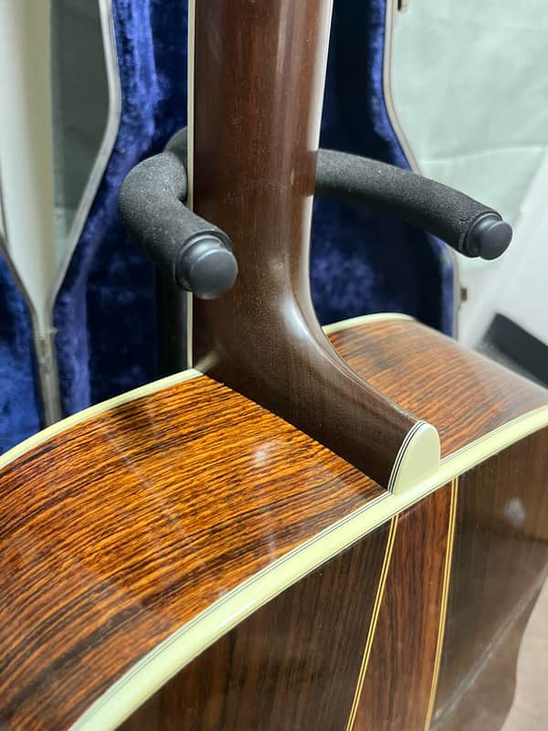
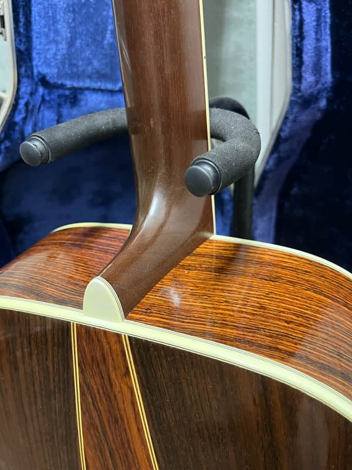
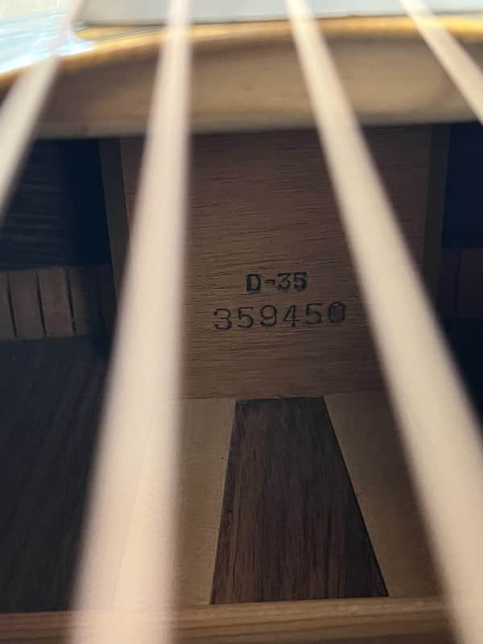